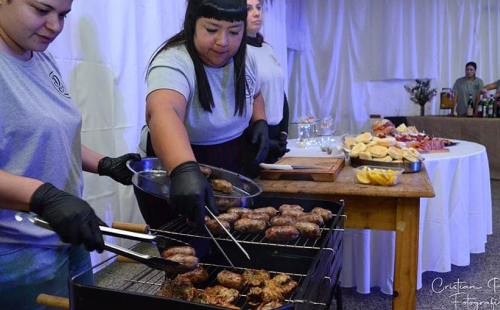

Nuestra Historia
Nuestra historia comienza en 2013, con una idea que surgió en conjunto con una persona de nuestro entorno, la cual nos propuso realizar el catering para un evento festivo, el cumpleaños de 15 de su hija, siendo que ya teníamos una base en el mundo de la gastronomía.

Comenzamos en conjunto con compañeros de la carrera y propusimos el nombre de GyG en un principio. Este proyecto inicial se terminó por diferentes razones, pero el sueño no se acabó con esta primera caída, sino que fue el principio de un nuevo comienzo, guiado por el nombre de una persona especial, la abuela Doña Alicia.